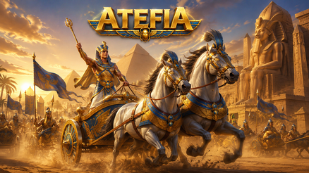
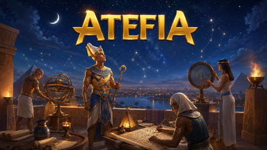
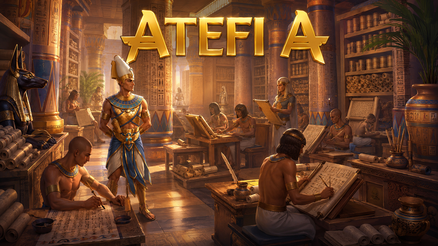

Casino Welcome Bonus
100% up to €500 + 200 FS

Sport Welcome Bonus
100% up to €100

Tournaments
Daily prizes

VIP Free bet Daily
50% up to €500


Table of Contents
Atefia Kasyno Online: Ustawienia I Rytm
Wyobraź sobie, że masz tylko kwadrans i chcesz “na szybko” uruchomić jedną grę, ale już po chwili przewijasz lobby bez końca. Większość osób traci kontrolę nie na samych rundach, tylko na starcie bez ram. Dlatego najpierw ustaw rytm, dopiero potem wybieraj rozrywkę.

Ta platforma jest dostępna w Poland i powinna być używana wyłącznie przez osoby pełnoletnie, w ramach zasad, które realnie Cię dotyczą. W 2026 najbezpieczniejsze podejście wygląda prosto: zaczynasz od limitu czasu, limitu budżetu i jednej decyzji, czego dziś szukasz. Gdy decyzja jest jedna, przestajesz skakać po menu jak po feedzie.
Najlepsza rzecz, jaką możesz zrobić w pierwszym dniu, to znaleźć trzy punkty “awaryjne” - ustawienia profilu, historię aktywności i pomoc. Wyobraź sobie, że nagle coś Cię zaskoczy (status operacji, nietypowy komunikat, wolniejsze ładowanie). Jeśli wiesz, gdzie sprawdzić fakty, nie klikasz nerwowo, tylko robisz porządek.
Druga warstwa to przerwy. Nie chodzi o długie moralizowanie, tylko o mikro-checkpointy. Ustawiasz alarm na 10-15 minut, dzwoni, robisz pauzę i zadajesz sobie trzy pytania: czy budżet się zgadza, czy tempo jest spokojne, czy nadal grasz według planu. Jeśli choć jedna odpowiedź brzmi “nie”, kończysz bez negocjacji.
Atefia Online: Gry, Limity I Tempo
Wyobraź sobie, że wybierasz grę, ale po dwóch minutach czujesz znudzenie i uciekasz do kolejnej, a potem do kolejnej. To nie jest “poszukiwanie najlepszego tytułu”, tylko zmęczenie decyzjami. W 2026 działa prostsza metoda: wybierz styl sesji, a nie idealny kafelek.

Najpierw określ, czy chcesz sesję krótką czy dłuższą, spokojną czy bardziej intensywną, oraz czy dziś testujesz czy grasz rutynowo. Potem wybierz jedną opcję i trzymaj się jej do końca timera. Zwykle to właśnie mniejsza liczba zmian zmniejsza impulsy: rzadziej rosną stawki, rzadziej pojawia się chęć “jeszcze jednego doładowania”, rzadziej budżet rozjeżdża się po cichu.
Atefia Oficjalna Strona: Jak Sprawdzać Panel
Wyobraź sobie, że wracasz po tygodniu i masz wrażenie, że coś wygląda inaczej niż poprzednio. Zamiast od razu klikać w banery, zacznij od elementów stałych: ustawienia, historia i kontakt do wsparcia. Jeśli te miejsca są na swoim miejscu i czytelne, łatwiej zachować spokój, a decyzje nie są podejmowane “na czuja” - najpierw weryfikujesz, dopiero potem działasz.
Atefia Casino Polska: Sesja Na Telefonie
Wyobraź sobie grę na telefonie w autobusie: sieć przeskakuje, ekran ładuje się wolniej, a kciuk już chce kliknąć drugi raz. Tak powstają nieporozumienia - podwójne potwierdzenia, przypadkowe zmiany stawek, szybkie przełączanie między ekranami. Rozwiązaniem jest rytm: jedno działanie, czekasz na efekt, dopiero potem kolejny krok.
Na mobilnym urządzeniu pomaga też ograniczenie bodźców. Włącz tryb skupienia, wycisz powiadomienia, ustaw timer poza platformą. Jeśli czujesz, że klikasz szybciej niż zwykle, to nie jest sygnał, żeby “dokończyć”, tylko żeby zrobić przerwę albo zakończyć sesję. Krótka sesja z jasną granicą zostawia lepszy ślad w głowie niż długa, nerwowa gonitwa.
Małe Checkpointy, Duża Różnica
Wyobraź sobie, że przegrywasz kilka rund i pojawia się myśl: “zmienię grę, podniosę stawkę, przyspieszę”. To moment, w którym emocje chcą przejąć ster. Checkpoint działa jak hamulec: pauza, łyk wody, jedno spojrzenie na budżet i czas, a dopiero potem decyzja. Najprostsza zasada, która ratuje najwięcej sesji, brzmi: stawki zmieniasz po przerwie, nie w irytacji.
Atefia Kasyno Polska: Wpłaty I Wypłaty
Wyobraź sobie, że chcesz wpłacić szybko, bo “już wybrałeś grę”, a później przy wypłacie pojawia się stres: gdzie jest status, czy na pewno wszystko poszło, czemu nie widzę aktualizacji od razu. Ten stres często bierze się z tego, że płatności traktuje się jak przeszkodę. W praktyce to część procesu, którą warto poznać zanim emocje zrobią się głośne.

Najzdrowsze podejście w 2026 to konsekwencja. Wybierasz jedną główną metodę, trzymasz spójne dane i unikasz zmian w środku sesji “bo może będzie szybciej”. Zwykle takie kombinowanie nie przyspiesza niczego, tylko tworzy bałagan w historii operacji, a wtedy rośnie napięcie.
Pierwszą wpłatę potraktuj jak test procesu, nie jak start maratonu. Mała kwota, potwierdzenie, jedno spojrzenie na historię, krótka gra i stop. To daje Ci jasność, jak system zapisuje zdarzenia, gdy jesteś spokojny, a nie wtedy, gdy czujesz presję.
Wypłaty lubią cierpliwość. Jeśli po wysłaniu prośby odświeżasz ekran co minutę, rośnie tylko frustracja. Ustal rytm: wysyłasz prośbę raz, sprawdzasz, czy wpis jest w historii, a potem zaglądasz w status w rozsądnych odstępach. Im prostsza sekwencja działań, tym mniej wątpliwości i tym łatwiej ewentualnie poprosić o pomoc.
Warto też ustawić własną regułę budżetową: jeden depozyt na sesję. Wyobraź sobie, że masz gorszy moment i pojawia się myśl “doładuję jeszcze trochę, bo i tak jestem blisko”. To klasyczny mechanizm rozszerzania budżetu bez zauważenia. Reguła “jedna wpłata i koniec” odcina ten impuls.
Poniższa tabela porządkuje najczęstsze drogi płatności pod kątem wygody i typowych ryzyk. Bez obietnic i bez marketingu - tylko praktyka, która pomaga trzymać spokój.
Rodzaj Metody | Kiedy Jest Wygodna | Typowy Zgrzyt | Nawyk, Który Pomaga | Dla Jakiego Stylu |
Karta Płatnicza | Szybkie zasilenie salda | Pokusa podwójnego kliknięcia | Jedno potwierdzenie i czekasz | Krótkie, proste sesje |
Przelew Bankowy | Planowane operacje | Błąd w danych | Sprawdzasz liczby dwa razy | Spokojne, zaplanowane granie |
Portfel Elektroniczny | Regularne mniejsze sesje | Niespójne dane profilu | Te same dane w profilu | Rutyna i powtarzalność |
Portfel Krypto | Użytkownicy techniczni | Pomyłka w adresie | Kopiuj-wklej, bez przepisywania | Kontrola krok po kroku |
Środki Przedpłacone | Twardy budżet | Chęć doładowania | Traktujesz jako sufit wydatków | Maksymalna dyscyplina |
Na koniec detal, który często robi bałagan: wolne ładowanie. Wyobraź sobie, że ekran się zawiesza i kciuk automatycznie klika drugi raz. Zamiast “jeszcze raz”, zrób pauzę i sprawdź historię. Najpierw weryfikujesz, potem działasz. To działa lepiej niż nerwowe klikanie, które tworzy więcej pytań niż odpowiedzi.
Jak Czytać Statusy Bez Odświeżania
Wyobraź sobie, że po wysłaniu prośby o wypłatę masz ochotę “coś zrobić”, bo cisza Cię stresuje. Zamiast odświeżać ekran co chwilę, ustal interwał: sprawdzasz status po konkretnym czasie, a wcześniej nie wykonujesz dodatkowych ruchów. Jeśli coś wygląda nietypowo, zaczynasz od historii operacji, zapisujesz godzinę i kwotę, a dopiero potem kontaktujesz się ze wsparciem z faktami, nie z domysłami.

Bezpieczeństwo Konta I Przerwy W 2026
Wyobraź sobie, że grasz po ciężkim dniu i czujesz, jak tempo rośnie. W takich chwilach najbardziej potrzebujesz systemu, nie motywacji. System to hasło, spójne dane, limity, przypomnienia i możliwość zatrzymania sesji bez tłumaczenia się przed samym sobą.
Bezpieczeństwo konta to nie tylko “technika”, ale też porządek w nawykach. Mniej zmian urządzeń, mniej logowań na przypadkowych sieciach, mniej prób “na szybko”. Im stabilniejsze środowisko, tym mniej dodatkowych potwierdzeń i tym mniej sytuacji, które wywołują napięcie.
Przerwy czasowe i wykluczenie na określony okres to narzędzia kontroli, a nie kara. Najlepiej działają, gdy używasz ich wcześnie. Jeśli zauważasz irytację, pogoń, potrzebę “odrobienia”, to sygnał, że sesja przestaje być rozrywką. Wtedy pauza jest najrozsądniejszym ruchem w 2026.
Hasło, Urządzenia I Spójne Dane
Wyobraź sobie, że po kilku tygodniach próbujesz zgadnąć hasło i robisz serię prób z rzędu. Tak powstają blokady i frustracja. Mocne hasło zapisane w bezpieczny sposób, spójne dane w profilu oraz unikanie logowań na przypadkowych urządzeniach sprawiają, że dostęp jest stabilny, a Ty nie wchodzisz w sesję już zestresowany.
Limit Budżetu Bez Kombinowania
Wyobraź sobie, że budżet “jest w głowie”, ale nagle widzisz ciekawszą grę i mówisz sobie “to tylko mała zmiana”. Tak budżet rozjeżdża się w kawałkach, bez jednego wyraźnego momentu decyzji. Najlepiej działa budżet zapisany w regule: jedna kwota na sesję, bez doładowań w trakcie.
Drugi krok to podział na części. Jeśli masz budżet na wieczór, rozbij go na dwa lub trzy etapy i po każdym etapie rób obowiązkową przerwę. Wyobraź sobie, że po pierwszej części czujesz napięcie - wtedy kończysz, zamiast ciągnąć dalej. To prosty mechanizm, który chroni przed graniem “z rozpędu”.
Kiedy Zrobić Timeout, A Kiedy Koniec
Wyobraź sobie myśl, która wraca jak refren: “jeszcze jeden i kończę”. To często znak, że autopilot już działa. Timeout warto włączyć, gdy czujesz, że tracisz cierpliwość, a koniec sesji jest najlepszy, gdy Twoje decyzje stają się reakcyjne: rosną stawki, tempo klikania przyspiesza, a cel sesji znika z głowy.
Bonusy Bez Presji I Bez Gonitwy
Wyobraź sobie, że miałeś plan krótkiej sesji, a promocja sprawia, że nagle chcesz “maksymalizować”. W tym momencie problemem nie jest oferta, tylko zmiana zachowania: dłuższy czas, większa presja, większa skłonność do pogoni. Najbezpieczniejsze podejście to traktować bonusy jako opcję, nie obowiązek.
Jeśli jakaś oferta wymusza styl gry, którego nie lubisz (dłużej, szybciej, wyżej), zostaw ją na dzień, w którym masz spokojniejszą głowę - albo po prostu ją pomiń. Umiejętność pomijania to część kontroli. W 2026 “nie biorę” bywa lepszym wyborem niż “muszę skorzystać”.
Trzymaj się prostej zasady: oferta ma pasować do budżetu i timera, które już ustaliłeś. Wyobraź sobie, że wydłużasz grę tylko po to, żeby “nie zmarnować” okazji - zwykle kończy się to zmęczeniem i gorszymi decyzjami. Lepiej zakończyć sesję czysto i wrócić innym razem, niż ciągnąć ją na siłę.

Wsparcie I Rozwiązywanie Problemów
Wyobraź sobie, że coś Cię zaskoczyło: status operacji jest niejasny, strona ładuje się wolniej albo nie możesz znaleźć ustawienia, które widziałeś wcześniej. Odruchowo chcesz klikać więcej albo wysłać kilka krótkich wiadomości pod rząd. To zwykle wydłuża sprawę. Najpierw robisz porządek w faktach.
Sprawdź historię, zapisz godzinę i kwotę (jeśli dotyczy), oraz zanotuj, co dokładnie widzisz na ekranie. Dopiero potem kontaktujesz się ze wsparciem jednym, kompletnym opisem. Wyobraź sobie różnicę między “nie działa” a opisem: co zrobiłeś, czego oczekiwałeś, co widzisz teraz i na jakim urządzeniu. Druga wersja skraca drogę, bo nie ma zgadywania.
Jeśli problem dotyczy limitów lub przerw, też pisz konkretnie: co chcesz włączyć, zmienić albo gdzie utknąłeś. I pamiętaj o najprostszym narzędziu: pauza. Gdy czujesz napięcie, najlepszym ruchem często jest zatrzymanie sesji i powrót dopiero wtedy, gdy decyzje znów są spokojne.
FAQ
Wejdź w ustawienia konta i znajdź sekcję limitów lub narzędzi odpowiedzialnej gry, a potem ustaw dzienny, tygodniowy albo miesięczny pułap dopasowany do realnego budżetu. Wyobraź sobie, że robisz to przed sesją, na spokojnie - wtedy łatwiej wybrać liczbę, której nie będziesz “przesuwać” w trakcie emocji. Po zapisaniu wyjdź i wróć do profilu, aby upewnić się, że limit jest aktywny, i traktuj go jak twardą granicę.
Najpierw sprawdź historię operacji i upewnij się, że wpis ma właściwą kwotę oraz godzinę, a dopiero potem daj systemowi czas na aktualizację. Wyobraź sobie, że anulujesz i wysyłasz ponownie kilka razy z nerwów - tworzysz bałagan i trudniej zrozumieć, co jest aktualne. Najlepszy rytm to jedna prośba, kontrola w rozsądnych odstępach i kontakt ze wsparciem dopiero wtedy, gdy masz konkretne fakty.
Ustal z góry budżet i czas sesji, a następnie kończ, gdy osiągniesz którykolwiek limit, nawet jeśli masz wrażenie, że “już zaraz się odwróci”. Wyobraź sobie impuls, by podnieść stawkę, bo czujesz irytację - to sygnał do przerwy i powrotu do planu, nie do przyspieszenia. Zmieniaj stawki tylko po checkpointach (timer lub zaplanowana pauza), a jeśli nie umiesz spokojnie uzasadnić zmiany, lepiej jej nie rób.
Ustaw timer poza platformą, wycisz powiadomienia i ogranicz liczbę zmian w trakcie sesji, bo to właśnie na mobile najłatwiej wpaść w autopilot. Wyobraź sobie słabą sieć i przeładowanie ekranu - wtedy podwójne kliknięcie robi najwięcej szkody. Działaj wolniej, potwierdzaj kroki i jeśli czujesz, że tempo rośnie, zakończ sesję albo zrób przerwę czasową.
Warto wtedy, gdy rozrywka zamienia się w napięcie, złość albo potrzebę “naprawienia” wyniku, a decyzje stają się reakcyjne. Wyobraź sobie myśl “jeszcze jeden i kończę” powtarzaną w kółko - to często znak, że autopilot przejął ster. Przerwa czasowa resetuje emocje, a dłuższa pauza jest dobra, gdy chcesz postawić mocniejszą granicę i wrócić dopiero z spokojną głową.
Traktuj oferty jako opcję i korzystaj tylko z tych, które pasują do budżetu oraz timera ustalonych wcześniej, bez zmiany stylu gry. Wyobraź sobie, że wydłużasz sesję tylko po to, żeby “nie zmarnować” okazji - zwykle kończy się to zmęczeniem i gorszymi decyzjami. Jeśli oferta wymusza tempo lub ryzyko, których nie chcesz, pomiń ją i trzymaj się własnego planu.
Podaj konkrety: co zrobiłeś, o której, czego oczekiwałeś i co widzisz teraz, a jeśli dotyczy - dodaj kwotę i urządzenie. Wyobraź sobie różnicę między “nie działa” a krótkim opisem z faktami - w drugim przypadku wsparcie może działać od razu, zamiast dopytywać o podstawy. Wyślij jedną kompletną wiadomość i poczekaj na odpowiedź, bo seria follow-upów co minutę często zasłania najważniejsze szczegóły.